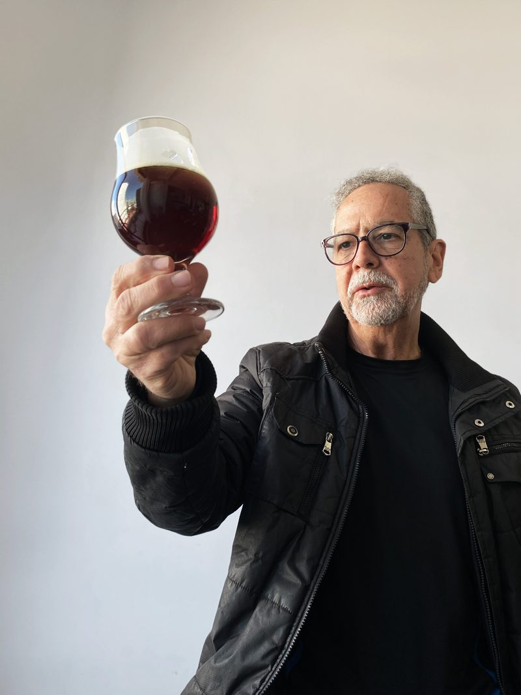

Curso Online · Edición Limitada
No es un curso de recetas. Es una metodología completa para que puedas formular, ajustar y replicar tu propio vermut con criterio técnico.
Presentan
Este curso está diseñado tanto para quienes recién empiezan como para quienes ya tienen experiencia y buscan llevar sus técnicas de elaboración a un nivel técnico y profesional.
A lo largo de la cursada vas a adquirir las herramientas y la metodología para formular tu propio vermut. Además, tendrás mi acompañamiento personalizado para elaborar tu primera receta durante el taller, evaluar los resultados juntos y realizar los ajustes necesarios para perfeccionar tu vermut.
Trabajamos con cupos muy reducidos para garantizar el seguimiento de tu proceso.
Historia, estilos internacionales y marco técnico del vermut. Botánicos, propiedades extractivas, selección de base alcohólica. Arrancás a diseñar tu fórmula.
Extracción hidroalcohólica, balance de fórmula, ensamblaje y ajuste de parámetros críticos — ABV, amargor, perfil aromático. En la segunda mitad de esta clase se establecen las pautas del taller práctico. A partir de ahí, cada alumno elabora su propio vermut antes del tercer encuentro.
Presentás tu vermut. Evaluación sensorial conjunta de todos los vermuts desarrollados por el grupo de alumnos: analizamos cada decisión, corregimos lo que hace falta y reafirmamos los aciertos. Troubleshooting técnico en vivo.
Grupos reducidos para garantizar el seguimiento personalizado de cada participante a lo largo de todo el proceso.
Encuentros por Zoom con participación activa y consultas en tiempo real.
Acceso posterior a todas las clases para repasar cuando lo necesites.
Documentación complementaria de apoyo para seguir profundizando.
Certificado de asistencia y aprobación al completar el curso.
Seguimiento personalizado de tu proceso de formulación durante toda la cursada.

Fundador de Ofrenda Vermut y de Atelier Rosso, estudio de desarrollo de recetas de vermut exclusivas para bares, restaurantes y emprendedores.
Docente especialista en bebidas maceradas, destiladas y fermentadas. Su metodología parte de la comprensión técnica de cada botánico y cada proceso, para que el alumno pueda tomar decisiones propias y no simplemente seguir pasos.
Con base en Buenos Aires, trabaja con productores, bares y emprendedores de todo el país en el desarrollo de sus propias fórmulas de vermut.
o 3 cuotas sin interés de $26.667
Precio regular: $120.000 ARS
Transferí al alias ofrenda.vermut en Mercado Pago
y luego completá el formulario con tus datos.
También podés abonar en 3 cuotas sin interés con tu tarjeta de crédito a través de Mercado Pago.
Realizá tu transferencia y completá el formulario. En menos de 3 horas recibís confirmación de tu inscripción en el correo que registraste.
También podés abonar en 3 cuotas sin interés con tu tarjeta de crédito a través de Mercado Pago.
No. El curso está diseñado para funcionar tanto para quienes empiezan desde cero como para quienes ya tienen experiencia y buscan llevar su técnica a un nivel más profesional. La metodología parte de los fundamentos y escala progresivamente.
Los ingredientes básicos para elaborar tu vermut durante la cursada — botánicos, base alcohólica, vino. En las primeras clases se detalla exactamente qué conseguir y dónde, sin equipamiento especializado.
Los tres encuentros son en vivo por Zoom, con participación activa. Después de cada sesión tenés acceso a la grabación completa para repasar el contenido cuando lo necesites.
Los grupos son reducidos por diseño — el acompañamiento personalizado es parte central de la propuesta. Los cupos son limitados y se completan por orden de inscripción.
Transferís al alias ofrenda.vermut en Mercado Pago y completás el formulario de inscripción con tu nombre, email y WhatsApp. Te confirmamos la inscripción de inmediato y recibís el enlace de Zoom 48 horas antes de cada clase.